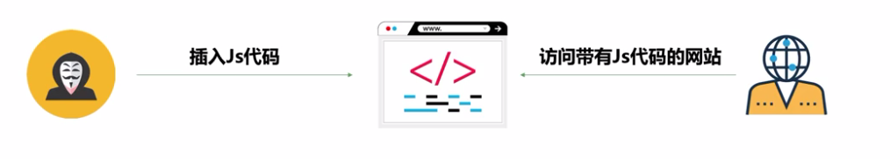

XSS漏洞原理与利用
一、XSS实战基础
A.XSS介绍及原理
1.XSS又叫CSS（Cross Site Script），跨站脚本攻击。它指的是恶意攻击者往Web页面里插入恶意JS代码，当用户浏览该页时，嵌入其中Web里面的JS代码会被执行，从而达到恶意的特殊目的
2.原理：利用我们所知道的各种黑魔法，向Web页面插入JS代码，让JS代码可以被浏览器执行，访问该页面的用户则被攻击

3.分类：
- 1）反射型：后端直接输出到页面上
- 2）存储型：存储到某种介质中，数据库、文件等
- 3）DOM型：类似反射型，前端JS拿到参数直接反映
4.XSS漏洞修复方法
- 1）HTML实体编码
- 2）使用白名单过滤用户输入的恶意字符
- 3）根据业务场景对症下药
B.存储型XSS实战
1.原理：攻击者在页面上插入XSS代码，服务端将数据存入数据库，当用户访问到存在XSS漏洞的页面时，服务端从数据库中取出数据展示到页面上，导致XSS代码执行，达到攻击效果

2.实战
- <img src=x onerror=alert(1)>
- <img src=x onerror=alert(document.cookie)>
C.反射型XSS实战
1.原理：攻击者在URL中插入XSS代码，服务端将URL中的XSS代码输出到页面上，攻击者将带有XSS代码的URL发送给用户，用户打开后受到XSS攻击

2.实战
- 搜索处很重要
- 闭合标签插入script
- strip_tags
- 属性里要考虑引号问题
D.DOM型XSS实战
1.原理：攻击者在URL中插入XSS代码，前端页面直接从URL中获取XSS代码并且输出到页面，导致XSS代码的执行，攻击者将带有XSS代码的URL发送给用户，用户打开后受到XSS攻击

2.实战
- jquery用text()代替html()
E.XSS辅助测试工具
1.Beef，http://beefproject.com/
2.XSS’OR，http://xssor.io
3.XSS平台，SecBox Css Platform（www.secbox.cn），https://x.secbox.cn
4.IE Tester
F.实验一：XSS漏洞原理及防范
1.XSS经常出现的地方有：
- 用户输入输出需展示在浏览器的一切功能点。
- 用户名，文章内容名称，URL跳转链接，图片名称等
2.漏洞防御
- 1）使用HttpOnly，浏览器Cookie属性，避免Cookie泄漏
- 2）输入输出检查
- 同时在客户端和服务端中实现相同的输入检测，如<，>，’等
- 输出检测，除了富文本的输出外都进行编码或转义的方式来防御
3.可以进行的攻击
- 窃取用户Cookie，如果用户Cookie被窃取，攻击者可以不通过密码，而直接登录进用户账户。
- 使用XMLHttpRequest构造模拟用户操作。
- XSS钓鱼攻击
- 用户PC信息探测收集
- XSS蠕虫攻击
G.实验二：TurboMail存储型XSS
H.实验三：PHPMyWind存储XSS
二、XSS进阶知识
A.存储型XSS多场景实战及Bypass详解（上）
B.存储型XSS多场景实战及Bypass详解（下）
1.限制字符长度字段注入，合理利用注释

C.反射型XSS多场景实战及Bypass详解
D.DOM型XSS多场景实战及Bypass详解
E.实验一：Discuz全版本存储型-DOM-XSS
1.完全阻断XSS跨站脚本攻击
- 1）利用HttpOnly
- 2）完善的输入和输出检查
- 3）使用随机数改写文件名和文件路径
三、XSS高级知识
A.Electron跨平台XSS-执行系统命令
B.possMessage XSS
C.localStorage XSS
D.Flash XSS
E.变种XSS：持久控制
1.持久控制思路

2.Service Worker
F.React XSS
业务逻辑与非常规漏洞原理与利用
一、业务逻辑漏洞
A.权限绕过漏洞（上）
1.防御方案
- 1）在前端验证用户的输入是否合法，在服务器端验证用户权限
- 2）执行关键操作前必须验证用户身份，有多阶段、多步骤的业务流程每一步都需要验证用户身份
- 3）对敏感参数信息进行加密处理，以防止攻击者对参数信息进行枚举
B.权限绕过漏洞（下）
C.支付逻辑漏洞
1.支付逻辑漏洞是指系统的支付流程中存在业务逻辑层面的漏洞
- 1）支付流程通常为选择商品和数量-选择支付及配送方式-生成订单-订单支付-完成支付
- 2）最常见的支付逻辑漏洞通常是由于服务器端没有对客户端请求数据中的金额、数量等敏感信息作校验导致
- 3）一般在电子商务网站上容易出现此类漏洞
2.一般分为4类
- 1）支付过程中可以修改支付金额
- 2）可以将订单中的商品数量修改为负值
- 3）请求重放
- 4）其他问题（程序异常、其他参数修改导致的问题等）
3.危害：任意金额购买商品，甚至可以导致购买商品后系统给自己帐户充值
4.修复方法
- 1）在请求数据中对涉及金额、数量等敏感信息进行加密，保证加密算法不可猜解。并在服务器端对其进行校验
- 2）支付交易请求数据中加入token，防止重放攻击
D.密码找回漏洞
1.找回密码功能模块通常会将用户凭证（通常为验证码或链接）发送到用户注册时使用的手机号或者邮箱中，只要用户不泄露自己的用户凭证就不会被攻击者利用。但有些信息系统在密码找回功能的设计存在逻辑缺陷，可能会将用于用户自证身份的信息的用户凭证以各种各样的方式返回到客户端。这样攻击者只要通过在本地抓取数据包并对其内容加以分析就能获取到其他用户的用户凭证，从而达到重置做生意用户密码的目的
2.在测试系统是否存在用户凭证客户端回显漏洞时，可以先用自己的帐号进行密码找回操作，并在抓取记录每次交互操作时的response数据包。然后观察分析数据包中是否存在和手机或邮箱中收到的用户凭证相同的字符串

E.验证码暴力破解测试
1.通常在网站的用户注册、密码找回等页面会设计有手机或邮箱验证码进行验证。主要为了贯彻落实上网实名制以及保障用户帐户的安全性
2.当这些验证码具有一定的规律性，并且没有做好对应的防护措施时，会导致攻击者通过穷举或其它方式猜解出验证码，从而对目标系统造成危害
- 恶意注册（任意用户注册，批量注册无用帐号等）
- 重置做任意用户密码
3.验证码流程

4.防御方案
- 1）提高验证码的复杂度（如：设为6位以上数字和字母的组合）
- 2）限制单位时间内验证码输入错误的次数（如规定10分钟内连续输错5次就锁定10分钟）
- 3）缩短验证码的时效性（一般短信验证码为5分钟内有效）
F.验证码重复使用测试
1.通常在网站的注册、登录、留言板以及评论区等页面会设计有验证码
2.如果设计不合理，将会导致验证码在验证成功一次之后，下次使用的时候就不再刷新，也就是可以重复使用，导致：
- 恶意注册
- 暴力破解
- 无限刷帖
- ……
3.通常情况下，验证码校验流程，当服务器端受理请求后，没有将上一次保存的session及时清空，将会导致验证码可重复使用

4.防御方案：当服务器端处理完一次用户提交的请求之后，及时将session域中的验证码清除，并生成新的验证码
G.验证码客户端回显测试
1.验证码客户端回显就是指当用户向网站系统发送一条验证码（如短信验证码）的请求时，验证码会直接返回显示在前端页面中，或者可通过抓包工具截获该验证码，危害：
- 绕过短信验证码验证进行登录或注册
- 重置任意用户密码
- ……
2.由于开发人员的代码逻辑问题，在调用短信平台发送短信时，没有判断验证码和手机号是否绑定，并且把验证码校验的功能放到客户端来进行，从而导致验证码在客户端回显。一般分为：
- 1）验证码输出在客户端页面中
- 2）验证码输出在返回数据包中

3.防御方案
- 1）在服务端对验证码进行校验
- 2）禁止将验证码内容输出到客户端页面以及返回的数据包中
H.验证码绕过测试
1.通常我们在进行帐号注册、密码找回、手机或邮箱绑定的时候，都需要接收验证码，如果没有做好逻辑判断，可以通过修改返回的数据包来实现绕过验证码的安全防护，危害：
- 绕过验证码的限制进行用户注册
- 任意用户密码重置
- 实现用户与任意手机号或邮箱绑定
- ……
2.由于开发人员使用了错误的逻辑判断，仅仅在客户端接收用户输入的验证码，并且在本地校验验证码是否正确。而该判断结果也可以在要地进行修改，最终导致客户端误以为我们已经输入了正确的验证码，实现了对验证码绕过

3.防御方案：在服务端增加验证码的认证机制，而不仅仅是在客户端进行判断
I.验证码自动识别测试
1.当验证码设计不存在逻辑层面的问题时，就要涉及到与验证码机制本身的下面对抗，也就是验证码识别技术
- 1）这里的验证码主要是指图片验证码
- 2）验证码自动识别就是指通过自动化的技术对图片验证码中的字符或公式等内容进行还原，从而突破验证码的安全限制
- 3）危害：突破验证码的安全限制，使验证码功能失效
2.一般对于图片验证码的识别流程为：图像二佱化处理->去干扰->字符分割->字符识别
- 1）图像二值化就是将图像上像素点的灰度值设置为0或255，也就是将整个图像呈现出明显的黑白效果。为了防止验证码被自动识别，通常会加入一些点、线、色彩之类的方式进行图像干扰
- 2）为了达到良好的识别效果，需要对图像进行去干扰处理
- 3）字符分割主要包括从验证码图像中分割出字符区域以及把字符区域划分成单个字符
- 4）字符识别就是把处理后的图片还原回字符文本的过程
3.验证码自动识别流程

4.Pkav http fuzzer
5.防御方案
- 1）增加背景元素的干扰。如背景色、背景字母等
- 2）字符的字体进行扭曲、粘连
- 3）使用公式、逻辑验证方法等作为验证码。如四则运算法、问答题等
- 4）图形验证码和使用者相关，比如选择联系人头像，选择购买过的物品等作为验证码
- 5）对单位时间内提交请求失败的次数进行限制
J.实验一：购买逻辑漏洞与防御
1.对于传递重要的参数信息应当加密隐藏
2.传递多个参数之间应当检测数据的一致性
K.实验二：密码修改逻辑缺陷分析
1.正确的检测和过滤用户输入的数据
2.对数据库查询出的数据进行检测
L.实验三：Cookies逻辑缺陷与伪造
1.给Cookie加密
2.加强后台验证
3.在Cookie中加入唯一的身份标识，比如加密后的密码
4.在需要验证权限的地方更换Cookie，使用相对更安全的Session
二、非常规漏洞原理与利用
A.SSRF漏洞原理与利用
1.SSRF原理

2.高危触发点
- 1）图片加载与下载：通过URL地址加载或下载图片
- 2）从远程服务器请求资源
- 3）数据库内置功能）
- 4）WebMail收取其他邮箱邮件
- 5）文件处理、编码处理、属性信息处理（FFmpeg、ImageMagick、DOCX、PDF、XML处理器）
3.危害
- 1）内网扫描，泄露内容拓扑
- 2）绕过防火墙后，内网测试环境及开发环境安全级别较低，可被进一步攻击，导致内容沦陷
- 3）内网服务指纹识别与相应服务攻击：如果内网中存在Redis/Memcache等服务且存在已知漏洞，可以进行识别攻击，进而获取内网主机权限
- 4）内网资源未授权访问：数据泄露（本地任意文件读取，使用file:///协议读取本地文件）
- 5）DoS拒绝服务风险
4.SSRF防御
- 1）代码防御，检测请求URL流程
- 解析目标URL，获取其Host
- 解析Host，获取Host指向的IP地址
- 检查IP地址是否为合法IP
- 请求URL
- 如果有跳转，取出跳转URL，重新执行步骤1

- 2）过滤URL，使用check_inner_ip检查内外网IP
- 3）过滤限制
- 过滤返回信息，验证远程服务器对请求的响应是比较容易的方法。如果Web应用是去获取某一种类型的文件，那么在把返回结果展示给用户之前先验证返回的信息是否符合标准（重要）
- 统一错误信息，避免用户可以根据错误信息来判断远端服务器的端口状态（重要）
- 禁用不需要的协议。仅仅允许HTTP和HTTPS请求，可以防止类似于file:///，gopher://，ftp://等引起的问题
- 限制请求的端口为HTTP常用的端口，比如80、433、8080
- 黑名单内网IP。避免应用被用来获取内网数据，攻击内网
- 加固应用程序服务器，并且确保已经关闭不必要的商品和服务
- 为允许运行的主机和服务设置白名单
B.XXE漏洞原理与利用
1.XML External Entity Injection，XML外部实体注入，利用可控的参数或者入口来加载不可控的参数或者代码，造成恶意不可控的运行结果
2.XML文档与DTD文档

3.dtd文档和xml文档实例的关系

4.xml实体

5.普通实体引入外部实体

6.XXE漏洞危害


7.XXE漏洞在JAVA语言常见的第三方库中体现


8.XML存在的意义
- 1）数据存储
- 2）数据传输
- 3）数据共享
9.XXE漏洞发现-WebService

10.XXE漏洞发现-Xfire XXE

11.总结

12.XXE漏洞发现-盲测

13.攻击流程图

14.防御措施
- 1）禁用外部实体
- 2）过滤和验证用户提交的XML数据
- 3）不允许XML中含有任何自己声明的DTD
15.实际有效防御措施
- 1）配置XML parser只能使用静态DTD，禁止外来引入
C.实验一：SSRF漏洞原理及防范
1.相关防护脚本，通过限制相关内网网段，并限制302跳转绕过访问。在图片加载，下载文件等位置调用此脚本进行验证操作
<?php
function check_inner_ip($url)
{
$match_result=preg_match('/^(http|https)?:\/\/.*(\/)?.*$/',$url);
if (!$match_result)
{
echo 'url fomat error';
return false;
}
try
{
$url_parse=parse_url($url);
}
catch(Exception $e)
{
echo 'url fomat error';
return false;
}
$hostname=$url_parse['host'];
$ip=gethostbyname($hostname);
$int_ip=ip2long($ip);
return ip2long('127.0.0.0')>>24 == $int_ip>>24 || ip2long('10.0.0.0')>>24 == $int_ip>>24 || ip2long('172.16.0.0')>>20 == $int_ip>>20 || ip2long('192.168.0.0')>>16 == $int_ip>>16;
}
function safe_request_url($url)
{
if (check_inner_ip($url))
{
echo $url.' is inner ip';
}
else
{
$ch = curl_init();
curl_setopt($ch, CURLOPT_URL, $url);
curl_setopt($ch, CURLOPT_RETURNTRANSFER, 1);
curl_setopt($ch, CURLOPT_HEADER, 0);
$output = curl_exec($ch);
$result_info = curl_getinfo($ch);
if ($result_info['redirect_url'])
{
safe_request_url($result_info['redirect_url']);
}
curl_close($ch);
return($output);
}
}
?>
2.总结
- 过滤返回信息，验证远程服务器对请求的响应是比较容易的方法。如果web应用是去获取某一种类型的文件。那么在把返回结果展示给用户之前先验证返回的信息是否符合标准。
- 限制请求的端口为http常用的端口，比如，80,443,8080,8090。
- 禁用不需要的协议。仅仅允许http和https请求。可以防止类似于file:///,gopher://,ftp:// 等引起的问题。
- 硬化应用程序服务器,并且确保已经关闭不必要的端口和服务。
提权与内网渗透
一、初见提权
A.提权概述
1.计算机中的权限
- 1）权限在不同的应用中有着不同的分类，与安全相关的大致上我们可以分为几个权限：匿名访问权限、来宾权限、用户权限、管理员权限、系统权限，不同的权限对应着的权利各不相同，我们大家电脑常用的权限为用户用户权限和管理权限
- 2）在什么情况下会用提权：一般会产生提权的原因都是因为当前权限无法做到某些我们需要做到的事情 。例如普通用户权限会有很多限制，例如无法执行某些程序以及服务

- 3）Webshell权限、数据库权限、普通用户权限下拿到权限
2.Windows基础命令
- 1）query user #查看用户登录情况
- 2）whoami #当前用户权限
- 3）systeminfo #查看当前系统版本与补丁信息
- 4）添加管理员用户-设置密码为123456
- net user ichunqiu 123456 /add
- net local group administrators ichunqiu /add
- 5）如远程桌面连接不上那么添加远程桌面组
- net local group “Remote Desktop Users” ichunqiu /add
- 6）其他命令

3.Linux基础命令
- 1）查看系统版本信息
- 查看发行版：cat /etc/issue，cat /etc/*-release
- 查看内核版本：uname -a
4.常见的提权方法

- 1）windows提权漏洞集合：https://github.com/SecWiki/windows-kernel-exploits
- 2）Linux提权漏洞集合：https://github.com/SecWiki/linux-kernel-exploits
- 4）exploit-db本地提权：https://www.exploit-db.com/
B.基于密码破解的提权
1.密码获取的常用手段
- 1）通过中间人劫持：网络窃听
- 2）通过用户主机窃听：键盘记录
- 3）通过简单猜测：常用密码
- 4）通过系统漏洞：永恒之蓝
- 5）用户自己泄漏：git、配置文件等泄漏方式
- 6）通过系统后门：shift后门
2.windows密码原理
- 1）windows使用了两种方法对用户的密码进行哈希处理，分别为LAN Manager（LM）哈希和NT LAN Manager（NTLM）哈希。所谓哈希（hash），就是使用一种加密函数进行计算后的结果
- 2）windows的系统密码hash默认情况下一般由两部分组成：第一部分是LM-hash，第二部分是NTLM-hash
- 3）windows密码结构分析

- 4）密码在线查询

- 5）windows密码hash导出
- 导出导入SAM、system
- gethashs导出
- Pwdump导出
- Wce导出
- 6）windows密码破解
- Saminside字典破解
- Ophcrack加载彩虹表破解
- 7）windows明文密码
- Wce明文密码获取
- Mimikatz明文密码获取：privilege::debug、sekurlsa::logonpasswords
- Getpass明文密码获取
3.Linux密码获取与破解
- 1）原理：在Linux系统中，涉及系统登录密码的重要文件有两个
- /etc/passwd #用户信息
- /etc/shadow #密码信息
- 2）不同系统密码文件位置

- 3）Linux系统的加密算法

- 4）破解Linux密码

4.横向渗透：仅一台
5.纵向渗透（一台向另一台）：匿名访问->后台->webshell->系统
二、操作系统提权
A.Windows操作系统提权基础
1.Windows提权整体总结

2.Windows基础提权命令


B.Windows操作系统提权实践
1.Windows分析工具利用
- 1）WinSystemHelper-master：上传bat+txt文件，运行bat查看结果
- 2）Sherlock

- 3）Privesc

C.Linux操作系统提权基础
1.Linux提权方法分析

2.基础命令

D.Linux操作系统提权实践
1.Linux分析工具


E.实验CVE-2016-5159（脏牛）内核提权漏洞分析
1.为什么这个漏洞叫脏牛（Dirty COW）漏洞？
- Linux内核的内存子系统在处理写时拷贝（Copy-on-Write)时存在条件竞争漏洞，导致可以破坏私有只读内存映射。
- 一个低权限的本地用户能够利用此漏洞获取其他只读内存映射的写权限，有可能进一步导致提权漏洞
- 漏洞危害：低权限用户利用该漏洞技术可以在全版本Linux系统上实现本地提权
- 影响范围：Linux内核>=2.6.22（2007年发行）开始就受影响了，直到2016年10月18日才修复。
- 360 Vulpecker Team：Android 7.0最新的10月补丁安全级别的系统上测试过漏洞POC，确认Android受影响
2.分析与思考
- 1）Linux内核的内存子系统在处理写时拷贝（Copy-on-Write)时存在条件竞争漏洞，导致可以破坏私有只读内存映射。
- 2）Linux写时拷贝技术(copy-on-write)：在Linux程序中，fork（）会产生一个和父进程完全相同的子进程，但子进程在此后多会exec系统调用，出于效率考虑，linux中引入了“写时复制“技术，也就是只有进程空间的各段的内容要发生变化时，才会将父进程的内容复制一份给子进程
- 3）竞态条件：竞态条件（race condition）是指设备或系统出现不恰当的执行时序，而得到不正确的结果。
- 4）linux内存管理--缺页异常处理触发异常的线性地址处于用户空间的vma中，但还未分配物理页，如果访问权限OK的话内核就给进程分配相应的物理页。
- 5）缺页中断：缺页中断就是要访问的页不在主存，需要操作系统将其调入主存后再进行访问。在这个时候，被内存映射的文件实际上成了一个分页交换文件。
三、数据库提权
A.SQL Server数据库漏洞利用与提权
1.·SA口令获取方法

2.常用的SQL Server提权语句


3.常见的提权命令


4.常见提权方法总结


B.MySQL数据库漏洞与提权
1.mysql提权基础

2.密码获取与破解

3.UDF

4.Mof

四、Metasploit漏洞利用与提权
A.Metasploit基础知识
1.Metasploit介绍

2.Metasploit基础


3.Msfvenom基础

4.反弹shell

5.Meterpreter基础

B.利用Metasploit提权
1.ms16–016

C.实验一：初级渗透综合实践
1.渗透测试思路
信息收集-----漏洞利用-----获取权限-----提升权限
常见的信息收集主要是基于web相关信息去查找比如后台，后台绝对路径，还有网站目录结构等等。在此题中比较重要的就是绝对路径和网站的目录结构；漏洞利用主要就是利用mysql注入获取mysql的root权限直接使用mysql的管理工具phpmyadmin直接向网站写shell，获取到shell过后就是提升权限，本文的虚拟机服务器是ubantu 12.04版本的有本地exp可以直接进行提权。
D.实验二：【S2-045】Struts2远程命令执行漏洞（CVE-2017-5638）
1.在default.properties文件中，struts.multipart.parser的值有两个选择，分别是jakarta和pell。其中的jakarta解析器是Struts 2框架的标准组成部分。默认情况下jakarta是启用的，所以该漏洞的严重性需要得到正视。恶意访问者可通过远程命令注入执行，令系统执行恶意命令，导致被黑客入侵，从而威胁服务器安全，影响极大。
E.实验三：Splash SSRF到获取内网服务器ROOT权限
1.SSRF漏洞：SSRF(Server-Side Request Forgery:服务器端请求伪造) 是一种由恶意访问者构造形成由服务端发起请求的一个安全漏洞。一般情况下，SSRF访问的目标是从外网无法访问的内部系统。（正是因为它是由服务端发起的，所以它能够请求到与它相连而与外网隔离的内部系统）SSRF 形成的原因大都是由于服务端提供了从其他服务器应用获取数据的功能且没有对目标地址做过滤与限制。比如从指定URL地址获取网页文本内容，加载指定地址的图片，下载等等。
五、内网信息搜集
A.内网信息搜集关注点
1.主机信息收集关键点

2.人员信息收集关键点

3.网络信息收集关键点

B.内网信息搜集常用方法
1.主机信息收集常用工具
- 1）PowerView.ps1：windows内网收集powershell工具：https://github.com/PowerShellMafia/PowerSploit
- 2）inlinux：linux内网收集python脚本：https://github.com/nitscan/inlinux
2.查看谁连接了dc

3.获取本地组中所有用户列表

4.查看用户的用户组

5.人员信息收集常用工具
- 1）历史记录&密码查看工具：https://www.nirsoft.net/
- 2）星号密码查看器
- 3）键盘记录
6.内网扫描常用工具
- 1）s.exe扫描器：s.exe TCP ip ip
- 2）nmap
- 3）dbscanner：数据库扫描器，https://github.com/se55i0n/DBScanner
六、内网环境渗透
A.内网渗透思路与方法
1.狙杀链

2.初始访问渗透

PHP代码审计
一、审计基础
A.审计方法与步骤
1.审计前的准备
- 1）获得源码
- 2）安装网站
2.把握大局
- 1）网站结构
- 2）入口文件
- 3）配置文件
- 4）过滤功能
3.审计方法
- 1）通读全文法
- 企业对自身产品的审计，能在一起小型应用也可以
- 根据入口文件，进入各个功能进行审计
- 2）敏感函数参数回溯法（shell_exec）
- 通过敏感函数，逆向追踪参数传递的过程
- Seay源代码审计系统
- 3）定向功能分析法（安装问题）
- 根据程序的业务逻辑
- 常见功能漏洞：初始安装、信息泄漏、文件上传、文件管理、登陆认证、数据库备份恢复、找回密码、验证码
4.把握大局->定向功能->敏感函数参数回溯
B.常见的INI配置
1.PHP配置文件


2.变量相关

3.安全模式

4.上传文件及目录权限

5.错误信息

6.魔术引号及远程文件

C.常见危险函数及特殊函数（一）
1.代码执行函数
1）eval

2）assert

3）preg_replace

2.包含函数

3.命令执行函数

4.文件操作函数

5.特殊函数


D.常见危险函数及特殊函数（二）
1.特殊函数


E.XDebug的配置和使用
1.配置选项


二、常见漏洞
A.命令注入
1.命令注入

2.审计思路

B.安装问题的审计
1.安装问题

2.审计思路

C.SQL数字型注入
1.SQL注入问题

2.审计思路

D.XSS后台敏感操作
1.xss后台第三操作问题

2.审计思路

E.文件包含漏洞的审计
1.文件包含漏洞审计

2.审计思路

F.任意文件读取
1.任意文件读取

2.审计思路

G.越权操作
1.越权操作

2.审计思路

H.登录密码爆破
1.登陆密码爆破

2.审计思路

I.截断注入
1.截断注入

2.审计思路